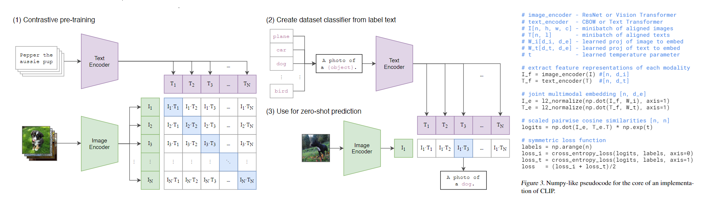

소개
Park's Emotion을 만든 저에 대해서 간략한 소개 해보겠습니다.
저는 박찬호이고, 현재 국립공주대학교 4학년 입니다. [간략한 배경 소개]
[a young man who doesn't give up]
전적 대학(충남도립대학) 2학년 때, 교내 대회를 하였습니다. 처음엔 안드로이드 앱을 하려고 하였으나
부족한 부분이 너무 많기에 CSS와 JavaScript를 이용하여 사이트를 만들기 시작하였습니다.
많이 부족한 실력임에도 불구하고 여러 가지 방법과 코드를 적용하는 방식을 서칭하고 실험해보면서 웹 사이트를 구축하기 시작했습니다.
그렇게 하여 여러 학과들이 참여한 곳에서 제가 처음으로 만든 웹 사이트를 이용하여 대회에 출전하였고,
부족한 실력임에도 불구하고 5등,학과 내에서는 2등이라는 성적을 거두었습니다.이것을 기반으로 FrontEnd라는 꿈을 확고하게 되었습니다.
[a responsible young man]
어렸을 때 부터 아버지는 저에게 책임감을 강조하셨습니다. 대신 제가 어떠한 일을 하고 그것을 진심으로 하고싶다면 그것에 대한 책임감을 강조하셨습니다.
이런 아버지의 말씀을 마음에 새겨넣고 저에게 주어진 일에 대해 최선을 다했고, 그 결과 여러 가지 직책을 맡았습니다.
조별과제가 주어졌을 땐 조장을 학과에서는 부학회장을 팀 프로젝트를 할 때는 팀장을 맡았습니다.
그 결과 홀로 가졌던 것보다 더욱 더 큰 책임감을 가져야 했으며 때론 지치고 포기하고싶었습니다.하지만 이를 통해서 더 많은 배움을
얻을 수 있었고, 책임감을 가지고도 부담스러워하지 않고 웃으면서 열심히 할 수 있는 청년이 되었습니다.
[A young man who digs until the end when he has questions]
항상 강의를 하거나 수업을 하다가 궁금한 것이 생기면 쉬는 타임마다 늘 물어보고, 인공지능 모델이나 웹 사이트, 코드 구현 등 궁금한 것이 생겼을 때 미리 메모하여 관련된 논문을 찾아본다거나 그것에 대해 학술적 자료가 나와 있으면 직접 찾아가 만드신 분에게 어떠한 방식과 코드를 사용하였는지 등 궁금한 것을 해결하였습니다. 그것을 바탕으로 제가 모르는 것이 생기거나 궁금한 것이 생기면 직접 찾아보고 찾아가서 해결한 부분을 보고 배우며 스스로를 보완하는 방법을 찾아낸 계기가 되었습니다.
[Park's Model Introduce]
Python에 CLIP과 BLIP, JavaScript 등을 활용하여 사람의 감정을 확인하는 성능을 더욱 향상시켰습니다.
수행 업무
-

- CLIP을 이용한 의류 추천 시스템
- 모델 구성 및 확인
- 모델 구성
- CLIP모델 활용 : OpenAI가 개발한 CLIP을 사용하고 있습니다.
- Text형식의 질문과 Image를 입력받아 두 입력 사이의 상호작용을 학습시킬예정입니다.
- 이 과정에서 얼굴 사진은 사용자의 성별,연령 등을 반영할 수 있도록 추가 정보를 추출하는 데 사용할 것입니다
- 진행상황:현재 모델 구축은 끝났으며, 각 추출 임베딩 벡터끼리의 매핑과 함께 의류를 가지고 있는 폴더와 매칭시켜서 결과물을 생성하는 것을 실행 중
- 추천 시스템 구축
- 특징 추출
- CLIP모델을 사용하여 의류 이미지와 사용자 질문의 특징을 추출합니다.
- 번역기능을 사용하여 한글에서 계절과 의류 종류의 특징을 추출합니다.
- 이미지에서는 사람의 성별을 추출합니다.
- 의류 데이터셋에 대해 미리 특징을 추출해놓고 사용자 질문이 들어올 때마다 해당 질문의 특징을 실시간으로 추출하여 매칭합니다.
- 유사도 측정
- 코사인 유사도, 유클리드 거리 등 사용하고 있습니다.
- 추천 알고리즘
- 계산된 유사도를 바탕으로 사용자에게 가장 적합한 의류를 추천합니다.
- 여기서 유사도가 높은 상위 N개를 추천하는 방법으로 진행해볼예정입니다.
- 평가 및 조정
- 성능 평가
- 사용자로부터 피드백을 받아 추천 시스템의 성능을 평가하는 것으로 해볼 예정입니다.
- 모델 조정
- 추천 알고리즘의 파라미터 조정, 데이터 전처리 방법 개선,추가적인 데이터 수집 등
- Face LandMark & DeepFake를 이용한 의류 착장 이미지
- 모델 구성 및 확인
- 모델 구성 및 전처리
- 다양한 각도와 조명에서 촬영된 이미지를 수집
- Face LandMark 추출
- 얼굴 이미지에서 주요 특징점을 추출합니다.(눈,코,입,턱 등)
- Dlib,OpenCV나 MediaPipe를 사용할 예정입니다.
- CLIP 얼굴 벡터 사용
- 추출된 얼굴 이미지를 CLIP모델을 통해서 나온 벡터를 사용합니다.
- 특징 성별도 CLIP에서 나온 벡터를 사용하여 의류 추천 및 적용에 반영
- DeepFake 생성
- GAN(Generative Adversarial Network)혹은 VAE(Variational Autoencoders)를 사용하여 자연스러운 의류 착용 이미지를 생성합니다.
- 딥페이크 모델은 얼굴 랜드마크와 CLIP 벡터를 참고하여 얼굴 표정과 자세에 맞춘 의류 이미지를 생성합니다.
- 사용 방법
- 성별 및 얼굴 특징 분석
- CLIP모델에서 생성된 얼굴 벡터를 기반으로 성별 분석
- 성별 정보와 얼굴 랜드마크를 활용하여 사용자의 얼굴에 어울리는 의류를 추천한 결과물을 사용합니다.
- 의류 이미지 합성
- 추천된 의류 이미지를 딥페이크 모델에 입력하여 얼굴에 자연스럽게 착용된 이미지를 생성합니다.
- 이 과정에서 얼굴 랜드마크 정보는 의류의 위치와 모양을 조정하는데 사용
- 결과 이미지 생성
- 최종 합성된 이미지를 사용자에게 제공합니다.
- Regist Data Processing
- MSSQL을 이용하여 회원정보 저장 및 웹 사이트로 정보 수정을 하면 정보가 수정되도록 개발 중
해경 경험을 통해 알게된 점
. . .